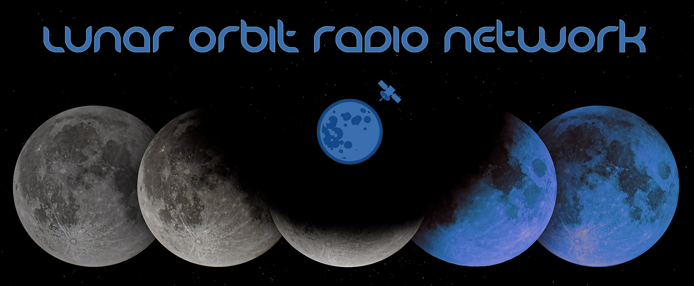

Lunar Orbit Radio broadcasting live on sub-etha channels 52.387386-4.646219
From the asteroid belt to the Van Allen belts, keep it locked in here for news, information, and everything you need to know to keep your interplanetary operation in the know.
Questions or requests? Hit us up on sub-etha or RF Ka band.